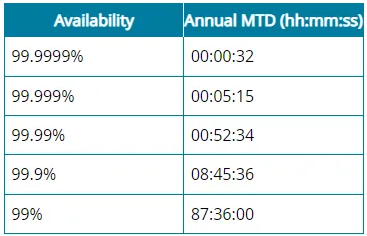
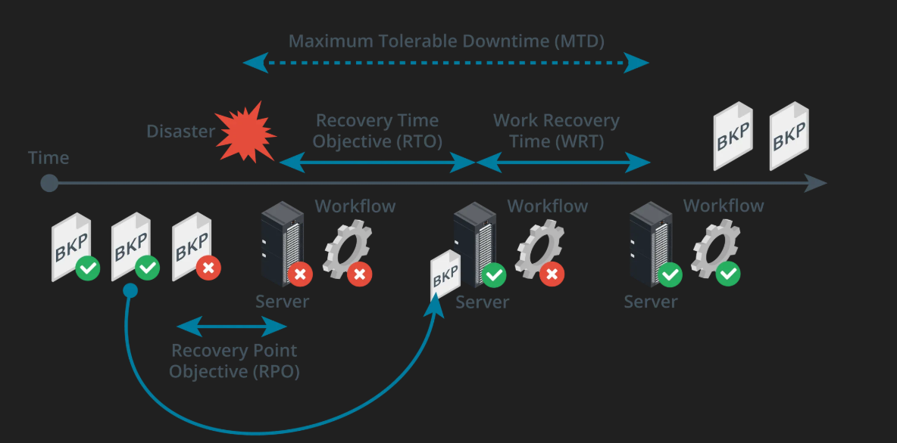

Basics of Disaster Recovery Planning
Disaster recovery (DR) planning is a vital part of maintaining business continuity and organizational resilience. It focuses on restoring critical systems, data, and operations after disruptive events such as natural disasters, hardware failures, ransomware attacks, or human error.
The goal of disaster recovery planning is not just to respond to an event, but to minimize downtime, prevent data loss, and ensure continuity of service. A comprehensive DR plan provides organizations with a clear roadmap to recover quickly and efficiently under pressure.
Key Components of a Disaster Recovery Plan
- Risk Assessment: Identify potential threats such as fires, floods, power outages, or cyberattacks. Understanding what could go wrong helps prioritize protective measures and response plans.
- Business Impact Analysis (BIA): Evaluate how disruptions affect business operations, finances, and reputation. This determines which systems and processes are most critical and require the fastest recovery times.
- Recovery Strategy: Develop step-by-step procedures for restoring hardware, software, data, and connectivity. These include identifying backup data locations, failover systems, and communication plans.
- Testing & Maintenance: Regularly test and update the DR plan to ensure its effectiveness as technology and business needs evolve. This may involve simulated disaster exercises, or “tabletop” recovery drills.
A well-structured DR plan ensures that employees know their roles, communication channels remain clear, and systems are prioritized for recovery in the right order. This preparation helps organizations recover faster and with fewer losses.
High Availability
One of the hallmarks of a resilient IT environment is high availability (HA)—the ability of systems to remain operational for as much time as possible with minimal downtime. Availability is typically expressed as a percentage of uptime over a defined period, often one year.
Availability and downtime are inversely related: when availability increases, downtime decreases. For instance, an availability rate of 99.9% (known as “three nines”) allows for roughly 8.7 hours of downtime per year, whereas 99.999% (“five nines”) reduces downtime to about five minutes annually.

Measuring and Implementing High Availability
- Maximum Tolerable Downtime (MTD): The longest period that a business process or system can be unavailable before causing significant damage to operations. MTD defines the upper limit for recovery efforts.
- Agreed Service Time: The total amount of time the system is expected to be operational, minus planned maintenance intervals.
High availability is often achieved through technologies like redundancy (duplicate components), load balancing, failover clustering, and geographically distributed data centers. Systems that must operate continuously—such as hospital networks or banking systems—typically target 24x7x365 availability.
Continuous Availability
Some environments require near-zero downtime, known as continuous availability. In these cases, systems are designed to function without interruption, even during maintenance or unexpected hardware failures. Continuous availability is crucial when lives or safety depend on system reliability.
Examples include:
- Medical networks supporting life-sustaining equipment.
- Air traffic control systems.
- Satellite communication systems.
- Autonomous vehicle networks and smart city infrastructure (e.g., emergency dispatch and smart traffic signals).
Recovery Metrics
Recovery metrics define measurable goals for how quickly and completely systems should recover after a disaster. They are central to any disaster recovery or business continuity plan, ensuring expectations are realistic and aligned with organizational priorities.
- Maximum Tolerable Downtime (MTD): Represents the total amount of time a business process or system can remain offline before significant harm occurs. MTD sets the ultimate boundary for recovery efforts.
- Recovery Time Objective (RTO): Defines how quickly a specific system or application must be restored after a disruption. RTO helps guide decisions about what type of backups or failover systems are needed. For instance, an RTO of four hours means the system must be operational again within that timeframe.
- Recovery Point Objective (RPO): Refers to the maximum acceptable amount of data loss measured in time. For example, an RPO of 12 hours means backups must occur frequently enough that no more than 12 hours of data are lost during a disaster.
- Work Recovery Time (WRT): The time required after system restoration to reintegrate data, test functionality, and validate system performance. The total time to resume operations must meet the formula: RTO + WRT ≤ MTD.

Together, these metrics provide measurable targets for DR planning. By balancing RTO and RPO values with business requirements, organizations can select appropriate technologies—such as replication, snapshots, or cloud-based backups—to meet their recovery goals.
Key Takeaways
- Disaster Recovery is a core component of business continuity, ensuring minimal disruption and data loss during crises.
- High availability focuses on keeping systems online as much as possible, often through redundancy and failover systems.
- Metrics like RTO, RPO, WRT, and MTD help quantify recovery expectations and guide backup strategies.
- Regular testing, documentation, and staff training are just as important as technology in maintaining resilience.